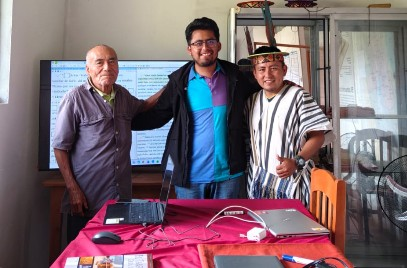
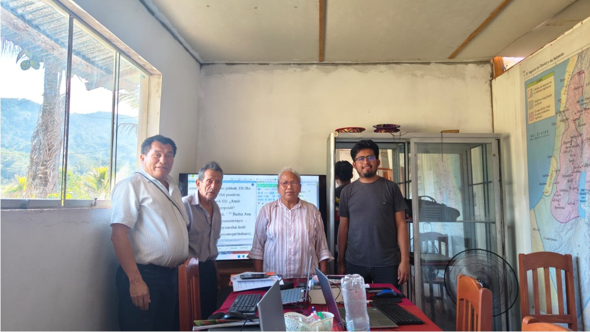
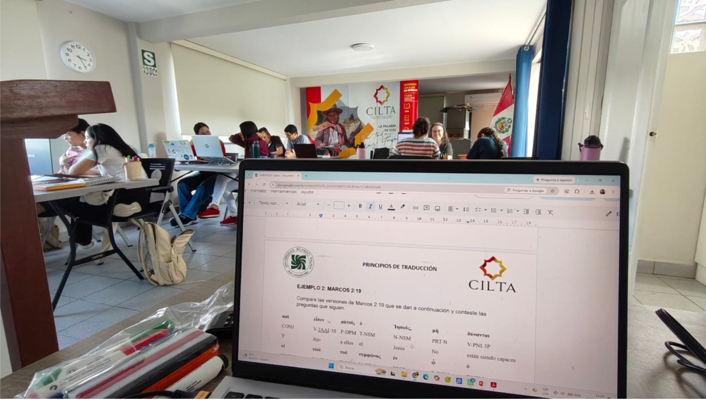
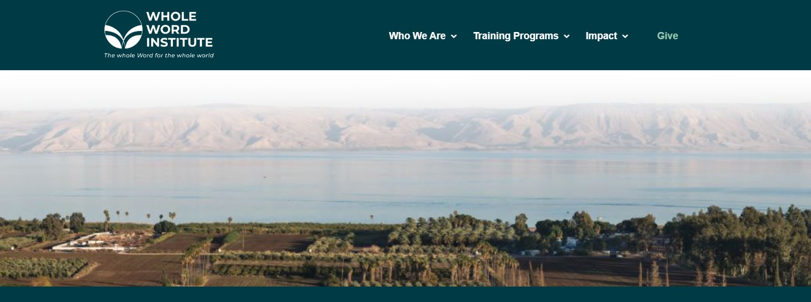

Boletín de Noticias
Sábado, 29 de agosto de 2026, Lima.
"PARA QUE SEA CONOCIDO EN LA TIERRA TU CAMINO EN TODAS LAS NACIONES TU SALVACIÓN" - SALMO 67:2.
¡Bendiciones, queridos hermanos! En esta ocasión les saludo desde la ciudad de Lima, para compartirles nuevamente y con mucha alegría lo que el Señor sigue haciendo.
Versión en PDF
Descarga o visualiza esta carta de noticias en su formato original.
Traducción del NT al mazateco
Les cuento que aún no disponemos del presupuesto aproximado para la impresión del Nuevo Testamento. Por favor, oren con nosotros para que pronto podamos obtener esta información; de esta manera podremos iniciar la recaudación de fondos y lograr que muy pronto los mazatecos tengan la Palabra del Señor en sus manos y en su propia lengua.
Curso de Semántica para ALTI
En relación con el curso que he estado impartiendo de manera virtual a traductores de diversos países de Latinoamérica, la próxima semana culminaré mi participación. Ha sido una etapa desafiante, ya que a la par tengo otras responsabilidades. En varias ocasiones tuve que dar clases desde zonas de México y Perú con difícil conexión a internet, pero el Señor proveyó los medios para lograrlo.
Además, varios de mis estudiantes enfrentan complicaciones para acceder a la energía eléctrica y, por ende, al internet, lo que ha hecho que acompañarlos sea un verdadero reto. Sin embargo, por la gracia de Dios han ido aprendiendo, y me llena de gozo ver el avance de cada uno de ellos. El curso continuará con dos grupos más. Por mis actuales ocupaciones no podré enseñarles directamente, pero he dejado todo el contenido listo para que los hermanos ya asignados puedan impartirlo. Sigamos orando por ellos y por los estudiantes.
Llegada al Perú y Trabajo en la Selva
Como les conté en la carta anterior, salí de México la madrugada del 25 de julio y, después de dos escalas y aproximadamente 16 horas, llegué a Lima. Al día siguiente viajé a la selva; salí por la noche y llegué cerca del mediodía a la comunidad nativa Unión de la Selva para reunirme con los hermanos yáneshas. Los primeros tres días los dediqué a capacitar a Eden y Agustín, quienes estarán sirviendo en el equipo como retrotraductores. La retrotraducción consiste en pasar al español el texto traducido, de la forma más literal posible. Esto es vital para que el consultor (que no domina el idioma nativo) pueda revisar el trabajo. Fue un tiempo muy provechoso; en tres días avanzamos excelente y quedaron capacitados para hacer una gran labor.

Después de esos tres días, viajé aproximadamente 10 horas selva adentro para encontrarme con el equipo de hermanos de la Iglesia Getsemaní, que vinieron desde México para servir en la base misionera entre los nomatsigengas. Pude estar con ellos cuatro días. Entre las diversas actividades que realizamos, la mayor parte del tiempo estuve apoyando en la construcción de la "Casa de la Biblia". Este espacio será utilizado en el futuro por el equipo de traducción y contará con áreas tanto para trabajar como para descansar. Les pido sus oraciones para que esta obra, que lleva cerca de un año en proceso, pueda concluirse muy pronto.
Tras esos cuatro días, retorné a Unión de la Selva con los hermanos yáneshas, esta vez para trabajar con Sara, Rolando y Jerónimo, quienes conforman el equipo de traducción. Los capacité en la "comprobación de comunidad", una fase donde el borrador se somete a consulta con los hablantes para evaluar su naturalidad y comprensión. Con esto se recaban comentarios valiosos para mejorar el texto final. Estas capacitaciones permitirán avanzar con la traducción del Nuevo Testamento, así como preparar la consultoría y aprobación de los libros que los hermanos ya tienen traducidos: 1 y 2 de Samuel, y Jonás. Oremos por este equipo de traductores. Es un grupo con muchas necesidades: todos son adultos mayores, enfrentan problemas de salud y batallan con la tecnología (¡solo esta semana pasé una hora por videollamada intentando ayudarles a imprimir una hoja a distancia!).

CILTA (Curso Internacional de Lingüística, Traducción y Alfabetización)
El 9 de agosto regresé a la ciudad de Lima y el 10 arrancaron las clases del segundo semestre en CILTA. Este año se están capacitando 9 estudiantes, preparándose para salir al campo o para adquirir mejores herramientas y servir entre los pueblos sin Biblia. La primera materia que impartí durante dos semanas fue Principios de Traducción, donde los estudiantes aprenden metodologías, técnicas y herramientas que serán útiles en el campo. Esta semana comencé a impartir una nueva materia que hemos desarrollado para este año: Facilitación de Proyectos de Traducción. Su propósito es capacitar a los alumnos en el acompañamiento práctico de todo el proceso de traducción, desde el contacto inicial con las comunidades hasta la publicación, distribución y uso de la obra.

Estudios de Hebreo en Israel
En mi caminar con el Señor durante los últimos años, he visto Su mano guiándome, proveyendo y cambiando mis planes una y otra vez; este año no ha sido la excepción. Hace dos semanas recibí la invitación para capacitarme en el idioma hebreo a través de una beca en la ciudad de Jerusalén, Israel. Aunque mi proceso de postulación fue extemporáneo, el Señor obró para que pudiera cumplir con los requisitos, de tal manera que ahora solo queda que el Estado de Israel emita la visa que requiero para residir allí por 9 meses. Esta será una nueva experiencia de caminar con el Señor. Voy a una parte del mundo donde las costumbres, la comida y el idioma son completamente distintos a lo que tenemos de este lado del mundo. Serán 9 meses en los que tendré que adaptarme a una cultura diferente y aprender a comunicarme únicamente en hebreo.
¿Por qué he aceptado este desafío? Porque para el ministerio que el Señor me ha entregado, requiero dominar las lenguas bíblicas para hacer un mejor trabajo de traducción, capacitación y acompañamiento de otros equipos. Esta es una oportunidad por la que he orado al Señor, y como siempre, Él sabe sorprendernos: aprenderé este idioma en la misma ciudad donde el Señor Jesucristo predicó y entregó Su vida por nosotros. Por esta razón viajaré a México en tres semanas para visitar iglesias, ver a mi familia y hacer los últimos trámites antes de partir a Israel la segunda semana de octubre. Oren por mí, por los trámites pendientes y para que el Señor siga abriendo el camino.

No me queda más que agradecerles enormemente por "sostener la cuerda" para que yo pueda estar en el campo, contribuyendo a que la Palabra llegue a cada pueblo en la lengua que hablan y entienden. Agradezco sus oraciones, pues en todo momento he sentido su respaldo. Agradezco sus palabras de ánimo, que siempre llegan en el momento necesario, y sus ofrendas, que envían con fidelidad y sacrificio para sostenerme económicamente. Sigamos juntos haciendo la Misión de Dios, porque solo como un cuerpo, una sola iglesia, podremos culminar nuestra encomienda. Oro para que el Señor les retribuya en gran manera por el amor que me demuestran en Él.
Su hermano en Cristo,
Agustino Martínez
Motivos de Agradecimiento
- Por proveer los medios y la conexión a internet para impartir el curso de Semántica desde zonas difíciles en México y Perú.
- Por el gozo de ver el aprendizaje de los traductores latinoamericanos, a pesar de sus limitaciones de energía eléctrica e internet.
- Por la llegada segura a Lima y el traslado sin contratiempos hasta la comunidad Unión de la Selva.
- Por el tiempo provechoso enseñando a los hermanos yáneshas.
- Por Su guía y por obrar el milagro de cumplir los requisitos de manera extemporánea para la beca de hebreo en Jerusalén.
- Por el amor, las oraciones, las palabras de ánimo y el sustento económico fiel de los hermanos que apoyan el ministerio.
Peticiones de Oración
- Para que pronto se tenga el presupuesto de impresión, se pueda iniciar la recaudación y la comunidad tenga la Palabra en sus manos.
- Por los dos grupos de estudiantes que continúan el curso y por los maestros asignados que lo estarán impartiendo.
- Por la pronta conclusión de esta obra de construcción en la base misionera entre los nomatsigengas.
- Por la salud, fortaleza y adaptación tecnológica de los traductores yáneshas.
- Para que el Estado de Israel emita pronto la visa necesaria para los 9 meses de estudio.
- Por el viaje a México en unas semanas, los trámites finales pendientes y el viaje definitivo a Israel en la segunda semana de octubre. Que el Señor siga abriendo el camino.
- Por gracia y sabiduría para el proceso de adaptación a una nueva cultura, alimentación y el aprendizaje exclusivo del idioma hebreo.
"Si el Señor pone en su corazón el deseo de contribuir económicamente a este ministerio, puede hacerlo a través de los siguientes medios:"
Datos Bancarios
Contacto
agusmarvaz@gmail.com